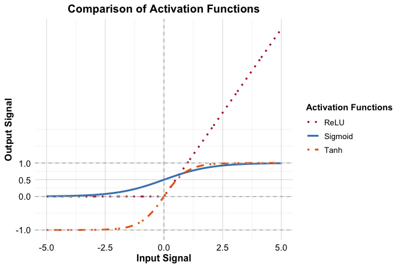
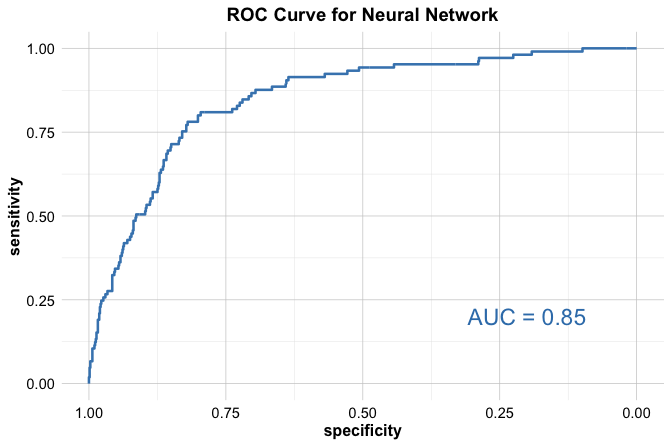

12 Neural Networks: Foundations of Artificial Intelligence
Can machines think and learn like humans? This question has fascinated humanity for centuries, inspiring philosophers, inventors, and storytellers alike. From the mechanical automata of ancient Greece to the artificial beings of science fiction, visions of intelligent machines have long captured our imagination. Early inventors such as Hero of Alexandria designed self-operating devices, while myths like the golem and stories of automatons reflected a persistent desire to animate intelligence. What was once confined to myth and speculation has now materialized as Artificial Intelligence (AI), a transformative force reshaping industries, societies, and daily life.
AI is no longer a futuristic fantasy. Today, it powers technologies that touch nearly every aspect of modern life, from recommendation systems and fraud detection to autonomous vehicles and generative AI (GenAI) models capable of producing text, images, and music. These advancements have been fueled by exponential growth in computational power, the explosion of data availability, and breakthroughs in machine learning algorithms. At the heart of this revolution lies a class of models known as neural networks, the foundational technology behind deep learning.
Neural networks are computational models inspired by the structure and function of the human brain. Just as biological neurons connect to form intricate networks that process information, artificial neural networks consist of layers of interconnected nodes that learn patterns from data. This design enables them to recognize complex structures, extract meaningful insights, and make predictions. Neural networks are particularly well-suited for problems involving complex, high-dimensional, and unstructured data (such as images, speech, and natural language). Unlike traditional machine learning models, which rely on manually engineered features, neural networks can automatically discover representations in data, often outperforming classical approaches.
While deep learning, powered by sophisticated neural architectures, has led to groundbreaking advances in fields such as computer vision and natural language processing, its foundation rests on simpler models. In this chapter, we focus on feed-forward neural networks, also known as multilayer perceptrons (MLPs). These fundamental architectures serve as the essential building blocks for understanding and developing more advanced deep learning systems.
In this chapter, we continue advancing through the Data Science Workflow introduced in Chapter 2. So far, we have learned how to prepare and explore data, and apply classification methods (including k-Nearest Neighbors in Chapter 7 and Naive Bayes in Chapter 9), as well as regression models (Chapter 10) and tree-based models (Chapter 11). We have also discussed how to evaluate model performance (Chapter 8).
Neural networks now offer another powerful modeling strategy within supervised learning, capable of handling both classification and regression tasks with remarkable flexibility. They often uncover complex patterns that traditional models may struggle to detect.
Why Neural Networks Are Powerful
Why are neural networks the engine behind modern breakthroughs like self-driving cars, real-time translation, and medical image diagnostics? The answer lies in their remarkable ability to learn from data in ways that traditional models simply cannot match. Their strengths stem from three core capabilities:
Recognizing Patterns in Complex Data: Neural networks excel at identifying intricate structures in unstructured data, whether it is detecting faces in photos, understanding spoken language, or generating realistic images. These are tasks that traditional rule-based algorithms struggle to perform reliably.
Resilience to Noise: Thanks to their densely connected architecture and adaptive learning, neural networks can still make accurate predictions even when data is incomplete or noisy, such as audio recordings with background interference or blurry video frames.
Scalability and Flexibility: As data complexity grows, neural networks can scale accordingly. By adding more layers and neurons, they can model highly nonlinear relationships, making them ideal for large-scale applications like recommendation engines or credit scoring.
Of course, this power comes with trade-offs. Unlike decision trees, neural networks often behave like “black boxes”, making it difficult to trace how individual predictions are made. In domains where transparency is critical (such as healthcare or finance), this lack of interpretability can be a serious concern.
Training these models also demands significant computational resources, often requiring GPUs or TPUs to efficiently process large datasets.
Yet despite these challenges, the impact of neural networks is undeniable. Just as neurons in the brain work together to form thought and perception, artificial neurons collaborate to extract patterns, recognize context, and make predictions. This ability to adapt and generalize has made neural networks central to the ongoing evolution of intelligent systems.
What This Chapter Covers
Ever wondered how machines can recognize faces, translate languages, or generate music? Neural networks are the driving force behind these breakthroughs, and in this chapter, we unpack their foundations and show how to apply them in practice using R.
By the end of this chapter, you will understand how neural networks mimic biological intelligence, how they learn from data, and how to train your own network to solve real-world problems.
We will move step-by-step through the essentials:
Biological inspiration: How the structure and function of the human brain inspired artificial neural networks.
Core architecture and mechanics: The layers, nodes, and weights that allow networks to represent and process data.
Activation functions: Why non-linearity is essential, and how different functions shape a network’s learning capacity.
Training algorithms: How neural networks learn from data through iterative optimization.
Applied case study: Using a neural network to predict customer behavior in the bank marketing dataset, bringing theory into practice.
Neural networks have revolutionized computing, enabling machines to tackle problems once considered unsolvable. From autonomous vehicles to medical diagnostics, these models are shaping the future of AI. To understand how they function, we begin by exploring their biological origins and the inspiration drawn from the human brain.
12.1 The Biological Inspiration Behind Neural Networks
How can a machine recognize a cat, understand speech, or recommend a movie—all without being explicitly told the rules? The answer lies in the architecture of neural networks, which are inspired by one of nature’s most powerful systems: the human brain.
Biological neurons, the fundamental units of the brain, enable learning, perception, and decision-making through massive networks of interconnected cells. While each neuron is simple, the collective network is extraordinarily powerful. The human brain contains approximately \(10^{11}\) neurons, each forming around 10,000 synaptic connections. This yields a staggering \(10^{15}\) pathways (an intricate system capable of adaptive learning, pattern recognition, and high-level reasoning).
Artificial neural networks (ANNs) are simplified computational models that abstract key principles from this biological system. Although they do not replicate the brain’s full complexity, ANNs use interconnected processing units, artificial neurons, to learn from data. By adjusting the strengths of these connections (weights), neural networks can model complex, nonlinear relationships in domains such as image recognition, speech processing, and decision-making (areas where traditional models often struggle).
As shown in Figure 12.1, a biological neuron receives input signals through dendrites. These are aggregated and processed in the cell body. If the combined signal exceeds a certain threshold, the neuron “fires” and transmits an electrical signal through its axon. This nonlinear decision mechanism is central to the brain’s efficiency.
In a similar spirit, an artificial neuron (depicted in Figure 12.2) receives input features (\(x_i\)), multiplies them by adjustable weights (\(w_i\)), and sums the results. This weighted sum is passed through an activation function \(f(\cdot)\) to produce an output (\(\hat{y}\)). This output may then feed into other neurons or serve as the network’s final prediction. The activation function introduces the essential non-linearity that allows neural networks to approximate complex patterns.

One of the key strengths of neural networks is their ability to generalize, that is, to make accurate predictions on new, unseen data. Unlike traditional rule-based algorithms, which follow explicit instructions, neural networks learn flexibly from examples, discovering patterns even when data is noisy or incomplete.
This flexibility, however, comes with challenges. Neural networks are often regarded as black boxes by practitioners because their learned behavior is encoded in millions of parameters, making their decisions difficult to interpret. Additionally, training neural networks requires large datasets and substantial computational resources, often involving GPUs or TPUs for efficient learning.
In the following sections, we will explore how these models are constructed, trained, and applied in practice using R.
12.2 How Neural Networks Work
What if a model could not only fit a line but build its own features to recognize faces, interpret speech, or detect anomalies in real-time data? Neural networks extend traditional linear models by incorporating multiple layers of processing to capture complex relationships in data. At their core, they build upon the fundamental concepts of linear regression introduced in Chapter 10. As discussed in Section 10.4, a linear regression model makes predictions using the following equation:
\[ \hat{y} = b_0 + b_1 x_1 + b_2 x_2 + \dots + b_m x_m \]
where \(m\) represents the number of predictors, \(b_0\) is the intercept, and \(b_1\) to \(b_m\) are the learned coefficients. In this setup, \(\hat{y}\) is a weighted sum of the input features (\(x_1\) to \(x_m\)), with the weights (\(b_1\) to \(b_m\)) determining the influence of each feature on the prediction. This relationship is visualized in Figure 12.3, where predictors and outputs are shown as nodes, with the coefficients acting as connecting weights.

While this diagram illustrates the flow of information in a linear model, it also reveals a fundamental limitation: the model treats all features as contributing independently and linearly to the prediction. Linear models struggle to capture interactions between variables or hierarchical structures in data.
Neural networks address this limitation by introducing multiple layers of artificial neurons between the input and output layers, allowing them to model intricate, nonlinear relationships. This layered structure is illustrated in Figure 12.4.
The architecture of a neural network consists of the following key components:
The input layer serves as the entry point for the data. Each node in this layer corresponds to an input feature, such as age, income, or pixel intensity.
The hidden layers transform the data through multiple interconnected artificial neurons. Each hidden layer captures increasingly abstract features, allowing the network to learn patterns that are difficult to handcraft. Every neuron in a hidden layer is connected to neurons in both the preceding and succeeding layers, with each connection assigned a weight.
The output layer produces the final prediction. In classification tasks, this is typically a probability; in regression tasks, it is a continuous value.

In Figure 12.4, the input features flow into the network, are transformed by the hidden layers, and emerge as a final prediction from the output layer. Each connection is assigned a weight (\(w_i\)), which reflects the influence one neuron has on another. During training, these weights are adjusted to minimize prediction error.
The computation performed by a single artificial neuron can be described mathematically as:
\[ \hat{y} = f\left( \sum_{i=1}^{p} w_i x_i + b \right) \]
where \(x_i\) are the input features, \(w_i\) are their associated weights, \(b\) is a bias term that shifts the activation threshold, \(f(\cdot)\) is the activation function, and \(\hat{y}\) is the neuron’s output.
A critical feature of neural networks is the activation function, which introduces non-linearity. Without it, even deep networks would collapse into a simple linear model. This non-linear transformation is what gives neural networks their expressive power, enabling them to model intricate, real-world phenomena.
Key Characteristics of Neural Networks
Despite the wide variety of neural network designs, all networks share three essential characteristics that define how they learn and make predictions:
Non-Linearity Through Activation Functions: Activation functions transform a neuron’s input into an output signal passed to the next layer. This non-linear transformation enables the network to capture complex relationships in the data. Common choices include the sigmoid, ReLU (Rectified Linear Unit), and tanh (hyperbolic tangent) functions.
Capacity Defined by Network Architecture: The number of layers and the number of neurons per layer determine the model’s capacity to represent patterns. Deeper networks can learn more abstract, hierarchical representations, like recognizing edges in early layers and full objects in later ones.
Learning via Optimization Algorithms: Neural networks learn by iteratively updating their weights and biases to minimize a loss function. Optimization algorithms such as gradient descent compute how each parameter should change to improve predictions during training.
In the next sections, we take a closer look at each of these building blocks (starting with activation functions and their essential role in modeling non-linear patterns in data).
12.3 Activation Functions
What determines whether a neuron “fires”? And how can that simple decision give rise to models that recognize faces, understand speech, or generate images? The answer lies in the activation function, a fundamental component of neural networks. Much like biological neurons that integrate signals and fire when sufficiently stimulated, artificial neurons use activation functions to introduce non-linearity (enabling networks to model complex patterns beyond the reach of linear models).
Without activation functions, a neural network (even one with many layers) would reduce to a linear model, lacking the capacity to capture interactions, nonlinearities, or layered abstractions in data. Activation functions make it possible for networks to recognize abstract relationships in text, images, and time-series data.
In mathematical terms, an artificial neuron computes a weighted sum of its inputs and applies an activation function \(f(x)\) to determine its output:
\[ \hat{y} = f\left( \sum_{i=1}^{p} w_i x_i + b \right) \]
where \(x_i\) represents the input features, \(w_i\) are the corresponding weights, \(b\) is a bias term, and \(f(x)\) is the activation function. The choice of activation function significantly impacts the network’s ability to learn and generalize.
The Threshold Activation Function
One of the earliest activation functions, the threshold function, was inspired by the all-or-nothing behavior of biological neurons. It outputs 1 when the input is zero or greater, and 0 otherwise:
\[ f(x) = \begin{cases} 1 & \text{if } x \geq 0, \\ 0 & \text{if } x < 0. \end{cases} \]
This binary, step-like behavior is shown in Figure 12.5.

Although biologically intuitive, the threshold function is not differentiable, which prevents its use in gradient-based learning algorithms such as backpropagation. Its inability to capture nuanced input-output relationships also limits its effectiveness in modern neural networks.
The Sigmoid Activation Function
A widely used alternative to the threshold function is the sigmoid activation function, also known as the logistic function. It smoothly maps any real-valued input into the interval \((0, 1)\), making it suitable for binary classification problems where the output is interpreted as a probability. The function is defined as:
\[ f(x) = \frac{1}{1 + e^{-x}}, \]
where \(e\) is the base of the natural logarithm. The sigmoid function produces a characteristic S-shaped curve, as shown in Figure 12.6, and is both continuous and differentiable.

The sigmoid function is closely related to the logit function used in logistic regression (Section 10.6). In logistic regression, the log-odds of a binary outcome are modeled as a linear combination of input features:
\[ \hat{y} = b_0 + b_1 x_1 + \dots + b_m x_m. \]
The predicted probability is then computed using the sigmoid function:
\[ p = \frac{1}{1 + e^{-\hat{y}}}. \]
This transformation from linear score to probability is mathematically identical to the operation of a neural network with a single output neuron and sigmoid activation. When paired with a cross-entropy loss function, such a network behaves similarly to logistic regression. However, the inclusion of hidden layers allows neural networks to model nonlinear decision boundaries that are beyond the capacity of logistic regression.
Despite its advantages, the sigmoid function has limitations. When input values are large in magnitude (positive or negative), the function saturates, and the gradient approaches zero. This vanishing gradient problem can slow or prevent learning in deeper networks. As a result, sigmoid is typically used only in output layers, while other functions are preferred in hidden layers.
Common Activation Functions in Deep Networks
While the sigmoid function was foundational in early neural networks, modern architectures benefit from activation functions that offer faster convergence and improved gradient flow. The most widely used alternatives are:
Hyperbolic Tangent (tanh): Like sigmoid, but outputs values between \(-1\) and \(1\), making it zero-centered and often better suited for hidden layers.
ReLU (Rectified Linear Unit): Defined as \(f(x) = \max(0, x)\), ReLU is computationally efficient and helps mitigate the vanishing gradient problem.
Leaky ReLU: A variant of ReLU that allows a small negative output when \(x < 0\), reducing the risk of inactive (“dead”) neurons.
Figure 12.7 visually compares the output shapes of sigmoid, tanh, and ReLU activation functions across a range of inputs.

These activation functions each offer advantages depending on the architecture, input characteristics, and task complexity. The next subsection discusses how to select an appropriate activation function given the structure of the model and the goals of learning.
Choosing the Right Activation Function
Choosing an appropriate activation function is crucial for ensuring effective learning and model performance. The selection depends on both the learning task and the layer within the network:
Sigmoid: Used in the output layer for binary classification tasks.
Tanh: Preferred in hidden layers when zero-centered outputs aid convergence.
ReLU: Commonly used in hidden layers due to computational efficiency and gradient propagation.
Leaky ReLU: Applied when standard ReLU units risk becoming inactive.
Linear activation: Used in the output layer for regression tasks involving continuous targets.
Both sigmoid and tanh functions can saturate when input values are very large or small, causing gradients to vanish and slowing learning. This issue can be mitigated through preprocessing steps such as min-max scaling to keep inputs within effective ranges. In modern deep learning, ReLU and its variants are widely used due to their simplicity and effectiveness. However, the optimal choice of activation function often depends on the specific problem and should be evaluated empirically.
In the following section, we turn to the architecture of neural networks and examine how layers, neurons, and connections are structured to build models capable of learning from complex data.
12.4 Network Architecture
What makes some neural networks powerful enough to recognize faces, translate languages, or drive cars? The answer lies not just in the learning algorithm, but in the structure of the network itself—its architecture.
A neural network’s architecture refers to the arrangement of neurons and their connections, which determine how data flows through the model. While network designs vary, three factors primarily characterize their structure:
The number of layers in the network,
The number of neurons in each layer, and
The connectivity between neurons across layers.
This architecture defines the network’s capacity to learn and generalize. Larger networks with more layers and neurons can model intricate relationships and decision boundaries. However, effectiveness depends not only on size but also on how these components are organized.
To understand this, consider a simple example shown in Figure 12.3. This basic network consists of:
Input nodes, which receive raw feature values from the dataset. Each node corresponds to a feature.
Output nodes, which provide the network’s final prediction.
In this single-layer network, inputs are connected directly to outputs via a set of weights (\(w_1, w_2, \dots, w_m\)), which control how much influence each feature has. While such an architecture is suitable for basic regression or classification tasks, it is limited in its ability to capture complex, nonlinear patterns.
To overcome these limitations, additional layers can be introduced (known as hidden layers, as illustrated in Figure 12.4). These layers allow the network to learn intermediate features and nonlinear relationships, building toward more abstract representations of the data.
A multilayer network generally contains:
An input layer, where raw data enters the network,
One or more hidden layers, where features are transformed and abstracted,
An output layer, which generates the model’s prediction.
In fully connected networks, each neuron in one layer is connected to every neuron in the next. Each connection carries a weight that is updated during training to improve model performance.
Hidden layers allow for hierarchical processing of data. For example, early layers in an image recognition network may detect simple edges, while deeper layers recognize shapes or entire objects. Neural networks with multiple hidden layers are called deep neural networks (DNNs), and training them forms the foundation of deep learning. This has enabled breakthroughs in fields such as computer vision, speech recognition, and language understanding.
The number of input and output nodes depends on the specific task:
The number of input nodes equals the number of features in the dataset. A dataset with 20 features requires 20 input nodes.
The number of output nodes depends on the type of task: one node for regression, or one per class in multi-class classification.
The number of hidden nodes is flexible and depends on problem complexity. While more hidden nodes increase capacity, they also raise the risk of overfitting (where the model performs well on training data but poorly on new data). Larger networks also demand more computation and training time.
Balancing complexity and generalization is essential. The principle of Occam’s Razor (preferring the simplest model that performs well) often guides architecture choices. In practice, optimal architectures are found through experimentation and are often paired with techniques like cross-validation and regularization (e.g., dropout or weight decay) to avoid overfitting.
Although this section focuses on fully connected networks, alternative architectures provide further specialization:
Convolutional neural networks (CNNs) are optimized for image data,
Recurrent neural networks (RNNs) are designed for sequential tasks like speech or text.
These architectures build on the same principles but are tailored for specific data structures.
In summary, a network’s architecture sets the stage for its learning capacity. From single-layer models to deep neural networks, choosing the right structure is a key part of building effective AI systems. As part of the modeling stage in the Data Science Workflow, selecting an appropriate architecture lays the foundation for training accurate and generalizable models.
12.5 How Neural Networks Learn
How does a neural network improve its predictions? Like a student learning from experience, a neural network begins with no prior knowledge and gradually refines its internal connections through exposure to data. These connections, represented as adjustable weights, are updated over time to help the network recognize patterns and make accurate predictions. Just as a child learns to identify objects through repeated encounters, a neural network improves by iteratively refining its internal parameters.
Training a neural network is a computationally intensive process that involves updating the weights between neurons. While the basic ideas date back to the mid-20th century, a major breakthrough occurred in the 1980s with the introduction of the backpropagation algorithm, which made it feasible to train multilayer networks efficiently. Backpropagation enables the network to systematically learn from its mistakes, forming the foundation of modern neural network training used in areas such as image recognition and language modeling.
The learning process involves two main phases: a forward phase and a backward phase, and it proceeds iteratively over multiple passes through the training data, known as epochs.
In the forward phase, input data passes through the network, layer by layer. Each neuron applies its weights to the incoming signals, sums them, and applies an activation function. The final output is compared to the actual value, and an error is computed to quantify the discrepancy.
In the backward phase, this error is propagated backward through the network using the chain rule of calculus. The goal is to adjust the weights to reduce future prediction error. This adjustment is guided by gradient descent, which calculates how the error changes with respect to each weight. The network updates its weights in the direction that reduces the error most effectively, like descending a hill by following the steepest path downward.
The size of these weight updates is controlled by a parameter called the learning rate. A higher learning rate leads to larger, faster updates but may overshoot the optimal values. A lower rate yields more precise adjustments but may slow convergence. Modern training techniques often use adaptive learning rates to balance these trade-offs dynamically.
A key requirement for this process is that the activation functions must be differentiable. Common choices such as the sigmoid, tanh, and ReLU functions satisfy this condition and allow efficient gradient computation. Variants of gradient descent, including stochastic gradient descent (SGD) and Adam, further improve the speed and stability of training, especially for large datasets.
By repeating this cycle of forward and backward passes, the network progressively reduces its error and becomes better at generalizing to new data. Although the process may appear complex, modern tools such as TensorFlow and PyTorch automate these computations, allowing practitioners to focus on designing and evaluating models.
The development of backpropagation was a pivotal moment in neural network research. Coupled with advances in hardware like GPUs and TPUs, it has enabled the training of deep and complex networks that now drive many real-world AI applications. With this foundation in place, we turn next to practical examples of how neural networks can be applied to real-world data analysis.
12.6 Case Study: Predicting Term Deposit Subscriptions
Can we predict which customers will say “yes” before the call even happens? This case study explores how predictive modeling can help financial institutions run more effective marketing campaigns. We use data from a previous telemarketing campaign to build a neural network model that predicts whether a customer will subscribe to a term deposit. The goal is to uncover patterns in customer demographics and campaign interactions that can guide future targeting efforts and reduce unnecessary outreach.
The dataset comes from the UC Irvine Machine Learning Repository and is available in the liver package. It was originally used by Moro, Cortez, and Rita (2014) in a study of data-driven strategies for bank marketing. The target variable indicates whether the customer subscribed to a term deposit, and the predictors include personal attributes and campaign details.
Following the Data Science Workflow introduced in Chapter 2 and illustrated in Figure 2.3, this case study guides you through each stage of the process (from understanding the problem to modeling and evaluation). You will learn how to apply a neural network to a real-world classification task using R, with each step grounded in the workflow to promote clarity, reproducibility, and adherence to sound data science practices.
Problem Understanding
Financial institutions face the challenge of identifying which customers are most likely to respond positively to marketing efforts. Two common strategies are used to promote financial products:
Mass campaigns: Designed to reach a broad audience with minimal targeting, often resulting in low response rates (typically below 1%).
Directed marketing: A targeted approach that focuses on individuals likely to show interest, improving conversion rates but raising potential privacy concerns.
This case study enhances directed marketing by analyzing data from past campaigns to identify behavioral patterns associated with term deposit subscriptions. By predicting which customers are more likely to subscribe, the bank can optimize outreach, reduce costs, and minimize intrusive communications (while improving overall effectiveness).
A term deposit is a fixed-term savings account that offers higher interest rates than regular savings accounts. It helps banks secure long-term capital while providing customers with a stable investment option.
Overview of the Dataset
The bank dataset includes information on direct phone-based marketing campaigns conducted by a financial institution. Customers were contacted multiple times within the same campaign. The objective of this dataset is to predict whether a customer will subscribe to a term deposit (deposit = "yes" or "no").
We load the bank dataset directly into R and examine its structure using the following commands:
library(liver) # Load the liver package
data(bank) # Load the bank marketing dataset
str(bank)
'data.frame': 4521 obs. of 17 variables:
$ age : int 30 33 35 30 59 35 36 39 41 43 ...
$ job : Factor w/ 12 levels "admin.","blue-collar",..: 11 8 5 5 2 5 7 10 3 8 ...
$ marital : Factor w/ 3 levels "divorced","married",..: 2 2 3 2 2 3 2 2 2 2 ...
$ education: Factor w/ 4 levels "primary","secondary",..: 1 2 3 3 2 3 3 2 3 1 ...
$ default : Factor w/ 2 levels "no","yes": 1 1 1 1 1 1 1 1 1 1 ...
$ balance : int 1787 4789 1350 1476 0 747 307 147 221 -88 ...
$ housing : Factor w/ 2 levels "no","yes": 1 2 2 2 2 1 2 2 2 2 ...
$ loan : Factor w/ 2 levels "no","yes": 1 2 1 2 1 1 1 1 1 2 ...
$ contact : Factor w/ 3 levels "cellular","telephone",..: 1 1 1 3 3 1 1 1 3 1 ...
$ day : int 19 11 16 3 5 23 14 6 14 17 ...
$ month : Factor w/ 12 levels "apr","aug","dec",..: 11 9 1 7 9 4 9 9 9 1 ...
$ duration : int 79 220 185 199 226 141 341 151 57 313 ...
$ campaign : int 1 1 1 4 1 2 1 2 2 1 ...
$ pdays : int -1 339 330 -1 -1 176 330 -1 -1 147 ...
$ previous : int 0 4 1 0 0 3 2 0 0 2 ...
$ poutcome : Factor w/ 4 levels "failure","other",..: 4 1 1 4 4 1 2 4 4 1 ...
$ deposit : Factor w/ 2 levels "no","yes": 1 1 1 1 1 1 1 1 1 1 ...The dataset contains 4521 observations and 17 variables. The target variable, deposit, is binary, with two categories: yes and no. Below is a summary of all features:
Demographic features:
-
age: Age of the customer (numeric). -
job: Type of job (e.g., “admin.”, “blue-collar”, “management”). -
marital: Marital status (e.g., “married”, “single”). -
education: Level of education (e.g., “secondary”, “tertiary”). -
default: Whether the customer has credit in default (binary: “yes”, “no”). -
balance: Average yearly balance in euros (numeric).
Loan information:
-
housing: Whether the customer has a housing loan (binary). -
loan: Whether the customer has a personal loan (binary).
Campaign details:
-
contact: Type of communication used (e.g., “telephone”, “cellular”). -
day: Last contact day of the month (numeric). -
month: Last contact month of the year (categorical: “jan”, “feb”, …, “dec”). -
duration: Last contact duration in seconds (numeric). -
campaign: Total number of contacts made with the customer during the campaign (numeric). -
pdays: Days since the customer was last contacted (numeric). -
previous: Number of contacts before the current campaign (numeric). -
poutcome: Outcome of the previous campaign (e.g., “success”, “failure”).
Target variable:
-
deposit: Indicates whether the customer subscribed to a term deposit (binary: “yes”, “no”).
This dataset contains a diverse set of features related to customer demographics and past interactions, making it well-suited for building predictive models to improve marketing strategies. Because the dataset is already clean and well-structured, we can skip the initial data cleaning steps. We now proceed to Step 4: Set Up Data for Modeling in the Data Science Workflow introduced in Chapter 2 and illustrated in Figure 2.3.
Data Setup to Model
How do we know if a model will perform well on customers it has never seen? The answer begins with how we split the data. This step corresponds to Stage 4 of the Data Science Workflow: Data Setup to Model (Chapter 2). Our goal is to divide the dataset into separate training and test sets, allowing us to build models on past data and evaluate how well they generalize to new customers. Although we use a neural network for this case study, the same data split can be used to train and compare other classification models introduced in previous chapters (such as logistic regression in Chapter 10, k-nearest neighbors in Chapter 7, or Naive Bayes in Chapter 9). This allows for a fair evaluation of model performance under the same conditions, as discussed in the chapter on Model Evaluation (Chapter 8).
We use an 80/20 split, allocating 80% of the data for training and 20% for testing. But why 80/20? Would a 70/30 or 90/10 split yield different results? There is no universally optimal ratio: it often depends on dataset size and the trade-off between training data and evaluation reliability. You are encouraged to try different splits and reflect on the results.
To maintain consistency with earlier chapters, we apply the partition() function from the liver package:
The set.seed() function ensures reproducibility. The train_set is used to train the neural network model introduced in this case study, while the test_set serves as unseen data for evaluation. The test_labels vector stores the true labels of the test set, which we will later compare to the model’s predictions.
To validate this split, we compare the proportion of customers who subscribed (deposit = "yes") in both subsets using a two-sample Z-test:
x1 = sum(train_set$deposit == "yes")
x2 = sum(test_set$deposit == "yes")
n1 = nrow(train_set)
n2 = nrow(test_set)
prop.test(x = c(x1, x2), n = c(n1, n2))
2-sample test for equality of proportions with continuity correction
data: c(x1, x2) out of c(n1, n2)
X-squared = 0.0014152, df = 1, p-value = 0.97
alternative hypothesis: two.sided
95 percent confidence interval:
-0.02516048 0.02288448
sample estimates:
prop 1 prop 2
0.1150124 0.1161504The test confirms that the proportions in both subsets are statistically similar (p-value \(> 0.05\)), validating our split. This gives us confidence that the split preserves the class distribution, making evaluation results more reliable (see Table 6.1 in Section 6.4 for why we use a two-sample Z-test).
Our objective is to classify customers as either likely (deposit = "yes") or unlikely (deposit = "no") to subscribe to a term deposit, based on the following predictors: age, marital, default, balance, housing, loan, duration, campaign, pdays, and previous.
You might wonder why we selected only a subset of the available predictors—why include variables like age, balance, and duration while leaving out others such as job, education, contact, day, month, and poutcome. That is a fair question. For clarity and simplicity, this case study focuses on predictors that require minimal preprocessing. Our primary goal in this case study is to demonstrate how a neural network can be applied to real-world data with minimal preprocessing. In the exercises at the end of this chapter, you are invited to expand the model by incorporating additional features from the bank dataset. This provides an opportunity to practice data preparation, potentially improve model accuracy, and explore how richer feature sets influence learning.
Now that the data are partitioned, we move on to preparing them for modeling. Two key steps (encoding categorical predictors and scaling numerical features) ensure that all predictors are represented in a format suitable for neural networks. This preparation is essential because neural networks require numerical inputs and are sensitive to differences in feature scale.
Encoding Binary and Nominal Predictors
Since neural networks require numerical inputs, categorical variables must be converted into numeric representations. For binary and nominal (unordered) predictors, one-hot encoding is a suitable method. It transforms each category into a separate binary column. We apply the one.hot() function from the liver package to convert selected binary and nominal features into a format compatible with a neural network.
categorical_vars = c("marital", "default", "housing", "loan")
train_onehot = one.hot(train_set, cols = categorical_vars)
test_onehot = one.hot(test_set, cols = categorical_vars)
str(test_onehot)
'data.frame': 904 obs. of 22 variables:
$ age : int 43 40 56 25 31 32 23 36 32 32 ...
$ job : Factor w/ 12 levels "admin.","blue-collar",..: 1 5 10 2 10 2 8 5 10 3 ...
$ marital_divorced: int 0 0 0 0 0 0 0 0 0 0 ...
$ marital_married : int 1 1 1 0 1 1 0 0 0 0 ...
$ marital_single : int 0 0 0 1 0 0 1 1 1 1 ...
$ education : Factor w/ 4 levels "primary","secondary",..: 2 3 2 1 2 2 3 3 3 1 ...
$ default_no : int 1 1 1 1 1 1 1 1 1 0 ...
$ default_yes : int 0 0 0 0 0 0 0 0 0 1 ...
$ balance : int 264 194 4073 -221 171 2089 363 553 2204 -849 ...
$ housing_no : int 0 1 1 0 1 0 0 1 0 0 ...
$ housing_yes : int 1 0 0 1 0 1 1 0 1 1 ...
$ loan_no : int 1 0 1 1 1 1 1 1 1 0 ...
$ loan_yes : int 0 1 0 0 0 0 0 0 0 1 ...
$ contact : Factor w/ 3 levels "cellular","telephone",..: 1 1 1 3 1 1 3 1 1 1 ...
$ day : int 17 29 27 23 27 14 30 11 21 4 ...
$ month : Factor w/ 12 levels "apr","aug","dec",..: 1 2 2 9 2 10 9 2 10 4 ...
$ duration : int 113 189 239 250 81 132 16 106 11 204 ...
$ campaign : int 2 2 5 1 3 1 18 2 4 1 ...
$ pdays : int -1 -1 -1 -1 -1 -1 -1 -1 -1 -1 ...
$ previous : int 0 0 0 0 0 0 0 0 0 0 ...
$ poutcome : Factor w/ 4 levels "failure","other",..: 4 4 4 4 4 4 4 4 4 4 ...
$ deposit : Factor w/ 2 levels "no","yes": 1 1 1 1 1 2 1 1 1 1 ...The one.hot() function expands each categorical variable into multiple binary columns. For instance, the marital variable, which has three categories (married, single, and divorced), is transformed into three binary indicator variables: marital_married, marital_single, and marital_divorced. To avoid multicollinearity (also known as the dummy variable trap), we include only two of these in the model formula, in this case, marital_married and marital_single. The third category (marital_divorced) becomes the reference group. The same principle applies to other nominal predictors, such as default, housing, and loan.
Note: Ordinal features (such as education level) are not always appropriate for one-hot encoding, as doing so may ignore their inherent order. Alternative encoding strategies may be more suitable; see Section 3.13 for more details.
Here is the formula used to specify the predictors for the neural network:
formula = deposit ~ marital_married + marital_single + default_yes + housing_yes + loan_yes + age + balance + duration + campaign + pdays + previousThis formula includes both the transformed categorical predictors and the numeric predictors we introduced earlier. With encoding complete, we now turn to scaling the numeric features to ensure they are on a comparable scale.
Feature Scaling for Numerical Predictors
Neural networks perform best when input features are on a similar scale. To achieve this, we normalize numerical variables using min-max scaling, transforming all inputs into a standardized range between 0 and 1. This prevents features with larger numerical ranges from dominating the learning process and helps improve model convergence.
To prevent data leakage, the scaling parameters (minimum and maximum values) are computed using only the training set and then applied consistently to the test set. This ensures that no information from the test data influences model training, thereby preserving the independence of the evaluation step. For a visual example of how improper scaling can distort evaluation, refer to Figure 7.6 in Section 7.5.
numeric_vars = c("age", "balance", "duration", "campaign", "pdays", "previous")
min_train = sapply(train_onehot[, numeric_vars], min)
max_train = sapply(train_onehot[, numeric_vars], max)
train_scaled = minmax(train_onehot, col = numeric_vars, min = min_train, max = max_train)
test_scaled = minmax(test_onehot, col = numeric_vars, min = min_train, max = max_train)We use the sapply() function to compute the minimum and maximum values for each numeric variable across the training set. These values are then passed to the minmax() function from the liver package, which applies min-max scaling to both the training and test datasets using the same parameters.
To visualize the effect of scaling, we compare the distribution of age before and after transformation:
ggplot(train_set, aes(x = age)) +
geom_histogram(color = "white", fill = "#2C7BB6") +
labs(x = "Age (years)", y = "Count", title = "Before Min–Max Scaling")
ggplot(train_scaled, aes(x = age)) +
geom_histogram(color = "white", fill = "#2C7BB6") +
labs(x = "Scaled Age [0–1]", y = "Count", title = "After Min–Max Scaling") 

The first histogram (left) shows the distribution of age in the training set before scaling, while the second histogram (right) shows the distribution after applying min-max scaling. The values are mapped to the interval [0, 1] while preserving the original shape of the distribution.
Now that we have partitioned and prepared the data appropriately (through encoding and scaling), we are ready to fit our first neural network model. Are you ready to see how these ideas come together in practice?
Training a Neural Network Model in R
We use the neuralnet package in R to implement and visualize a feedforward neural network. This package provides a straightforward and flexible way to build neural networks, along with functionality for inspecting network topology. While neuralnet is a useful learning tool, it is also powerful enough for small- to medium-scale applications.
If the neuralnet package is not installed, you can install it using install.packages("neuralnet"). Then load it into the R session:
We train the network using the neuralnet() function:
neuralnet_model = neuralnet(
formula = formula,
data = train_scaled,
hidden = 1, # Single hidden layer with 1 node
err.fct = "sse", # Loss function: Sum of Squared Errors
linear.output = FALSE # Logistic activation function for classification
)Here’s what each argument in the function call does:
formula: Specifies the relationship between the target variable (deposit) and the predictors.data: Indicates the dataset used for training (train_scaled).hidden = 1: Defines the number of hidden layers and nodes (one hidden layer with a single node). For simplicity, we start with a minimal architecture.err.fct = "sse": Specifies the sum of squared errors as the loss function. While SSE is commonly used, cross-entropy loss (ce) is often preferred for classification tasks.linear.output = FALSE: Ensures that the output layer uses a logistic activation function, which is appropriate when outputs represent probabilities.
After training, we can visualize the network architecture:
plot(neuralnet_model, rep = "best", fontsize = 10,
col.entry = "#377EB8", col.hidden = "#E66101", col.out = "#4DAF4A")
This visualization shows that the network consists of:
11 input nodes, corresponding to the 11 predictors,
1 hidden layer containing a single node, and
2 output nodes representing the classification result (
yesorno).
The training process converged after 1887 steps, indicating that the error function had stabilized. The final error rate is 283.83. An analysis of the network weights suggests that duration (the length of the last phone call) has the strongest influence on the outcome. This finding is consistent with earlier studies, where longer calls were associated with higher engagement.
To experiment with how network complexity affects learning, try adjusting the hidden parameter to include more nodes or additional layers:
# One hidden layer with 3 nodes
neuralnet_model_3 = neuralnet(
formula = formula,
data = train_scaled,
hidden = 3,
err.fct = "sse",
linear.output = FALSE
)
# Two hidden layers: first with 3 nodes, second with 2 nodes
neuralnet_model_3_2 = neuralnet(
formula = formula,
data = train_scaled,
hidden = c(3, 2),
err.fct = "sse",
linear.output = FALSE
)You can visualize these more complex models using:
Observe how architectural changes affect training convergence, model flexibility, and computation time. How do these changes influence performance? You are encouraged to compare results using the model evaluation techniques introduced in earlier chapters.
Note: The neuralnet package is ideal for learning and small-scale experiments, but it lacks support for GPU acceleration and may not scale well to large datasets or deep architectures. For more advanced applications, consider exploring packages such as keras or torch, which are well-supported in R and enable training deep neural networks efficiently.
This simple model demonstrates how a neural network processes input features through multiple layers to identify patterns and make predictions. In the next section, we evaluate the model’s performance and interpret the results.
Prediction and Model Evaluation
How well does our neural network perform on customers it has never seen before? To answer this, we evaluate the model’s predictive performance on the test set. This corresponds to the final step of the Data Science Workflow: assessing how well a model generalizes to new data (Chapter 8).
We begin by generating predictions for the test set using the predict() function:
neuralnet_probs = predict(neuralnet_model, test_scaled)This produces the raw output activations for each observation. Since we are solving a binary classification problem, the network has two output nodes: one for deposit = "yes" and one for deposit = "no". These are not normalized probabilities, but unscaled activations.
Let us examine the first few predicted outputs:
round(head(neuralnet_probs), 2)
[,1] [,2]
[1,] 0.99 0.01
[2,] 0.98 0.02
[3,] 0.89 0.11
[4,] 0.97 0.03
[5,] 0.97 0.03
[6,] 0.99 0.01To classify each customer, we compare the two activation values. If the activation for deposit = "yes" (column 2) is greater than the activation for no (column 1), we predict a subscription.
We extract the relevant values and create a confusion matrix using a threshold of 0.5:
# Extract predictions for 'deposit = "yes"'
neuralnet_probs_yes = neuralnet_probs[, 2]
conf.mat(neuralnet_probs_yes, test_labels, cutoff = 0.5, reference = "yes")
Predict
Actual yes no
yes 23 82
no 16 783The confusion matrix summarizes the model’s classification performance. It reveals how many predictions are true positives (correctly predicted subscribers), false positives (predicted yes but actually no), true negatives, and false negatives.
To further assess model performance across different thresholds, we plot the Receiver Operating Characteristic (ROC) curve and compute the Area Under the Curve (AUC):
library(pROC)
neuralnet_roc <- roc(test_labels, neuralnet_probs_yes)
ggroc(neuralnet_roc, size = 0.9, colour = "#377EB8") +
annotate("text", x = .2, y = .2, size = 6, color = "#377EB8",
label = paste("AUC =", round(auc(neuralnet_roc), 3))) +
labs(title = "ROC Curve for Neural Network") 
The ROC curve visualizes the trade-off between sensitivity (true positive rate) and specificity (false positive rate) across thresholds. The AUC score (0.85) summarizes this performance into a single value. An AUC of 1 indicates perfect classification; a value close to 0.5 suggests random guessing.
This step completes our evaluation of the trained neural network. You are encouraged to:
Try different cutoff values (e.g., 0.4 or 0.6) and compare confusion matrices.
Identify false positives or false negatives and consider what features might lead to these misclassifications.
Compare this model’s ROC curve with those from previous chapters to see how neural networks perform relative to simpler classifiers.
In the next section, we reflect on key takeaways from this case study and discuss how neural networks can be extended to tackle more complex problems.
Reflections and Takeaways
This case study has walked you through the complete process of applying a neural network to a real-world classification problem (from understanding the data to evaluating model performance). Along the way, we followed the stages of the Data Science Workflow and explored practical considerations like feature encoding, data scaling, and model evaluation using confusion matrices and ROC curves.
Several key takeaways emerge:
Neural networks can effectively learn patterns in marketing data, especially when variables like call duration are strong indicators of customer behavior.
Proper data partitioning, transformation, and scaling are crucial to ensure model performance and generalizability.
Model complexity matters. By adjusting the number of hidden layers and nodes, you can explore trade-offs between flexibility, training time, and overfitting.
This model can be expanded by including additional features from the dataset (e.g.,
job,education, orcontact). Doing so requires thoughtful preprocessing but may lead to performance gains.It is also instructive to compare the neural network’s performance with simpler classifiers (such as logistic regression in Chapter 10, k-nearest neighbors in Chapter 7, Naive Bayes in Chapter 9, or tree-based models in Chapter 11). Doing so helps clarify when the added complexity of a neural network is justified.
While this case study focused on a binary classification task, neural networks are not limited to classification. They can also be applied to regression problems, time series forecasting, and more complex tasks such as image recognition and natural language processing (topics we will encounter in later chapters).
By experimenting with architectures, tuning hyperparameters, and comparing with other models, you will deepen your understanding of how neural networks behave in practice (and how to use them effectively to support data-driven decision making).
12.7 Chapter Summary and Takeaways
Can machines learn like humans? In this chapter, we explored how neural networks (mathematical models inspired by the human brain) form the backbone of many modern artificial intelligence systems. From their biological origins to their computational mechanics, we examined how these models process information, adapt through training, and uncover complex patterns in data.
Here are the key ideas you’ve learned:
Neural networks extend linear models by introducing hidden layers and activation functions, enabling them to capture nonlinear and interactive effects.
Activation functions like sigmoid, tanh, and ReLU inject non-linearity into the network, allowing it to model intricate relationships and make flexible decisions.
Learning happens iteratively through gradient-based optimization, where weights are updated to reduce prediction error. This training process is guided by algorithms like gradient descent and relies on differentiable activation functions.
Architecture matters: The number of layers and neurons shapes the model’s capacity, interpretability, and computational demands.
Beyond classification, neural networks can be applied to regression, time series forecasting, and deep learning tasks in vision, language, and beyond.
The term deposit case study demonstrated how to build and evaluate a neural network in R, reinforcing key ideas from theory with practical implementation. You saw how careful data preparation, architecture design, and model evaluation come together in real-world predictive modeling.
As you move into the exercises, consider experimenting with different architectures, adding more features, or comparing this model with others introduced in earlier chapters. Neural networks are powerful, but their effectiveness depends on your ability to apply them thoughtfully, tune them carefully, and evaluate them critically.
12.8 Exercises
These exercises help consolidate your understanding of neural networks by encouraging you to apply what you’ve learned, reflect on key concepts, and compare neural networks with alternative classification models. The exercises are grouped into three categories: conceptual questions, practical modeling tasks using the bank dataset, and comparative analysis using the adult dataset.
Conceptual Questions
Describe how a neural network is structured, and explain the function of each layer (input, hidden, output).
What is the role of activation functions in a neural network, and why are non-linear functions essential for learning?
Compare and contrast ReLU, sigmoid, and tanh activation functions. In what types of problems would each be preferred?
Why are neural networks considered universal function approximators?
Outline how backpropagation works. What role does it play in adjusting the weights of a neural network?
Why do neural networks often require large datasets to achieve strong performance?
Define the bias-variance tradeoff in neural networks. How does model complexity influence bias and variance?
What is dropout regularization, and how does it help prevent overfitting?
What is the purpose of the loss function in neural network training?
What is weight initialization, and why does it matter for training stability?
Compare shallow and deep neural networks. What advantages do deeper architectures offer?
How does increasing the number of hidden layers affect a neural network’s capacity to model complex patterns?
What are the signs that your neural network is underfitting or overfitting the data? What strategies can help address each issue?
Why is hyperparameter tuning important in neural networks? Which parameters are commonly tuned?
Compare the computational efficiency of decision trees and neural networks.
Reflect on a real-world application (e.g., fraud detection, voice recognition, or image classification). Why might a neural network be a suitable model? What trade-offs would you consider?
Hands-On Practice: Nerual Network with the bank Dataset
In the case study, we used a subset of predictors from the bank dataset to build a simple neural network model. This time, you will use all available features to further explore the dataset, build more sophisticated models, and compare performance across techniques.
Data Setup to Model
Load the bank dataset and examine its structure. Which variables are categorical? Which are numeric?
Split the dataset into training (70%) and testing (30%) sets. Validate the partition by comparing the proportion of customers who subscribed to a term deposit. Refer to Section 12.6 for guidance.
Apply one-hot encoding to all categorical features. How many new features are created?
Apply min-max scaling to numerical features. Why is feature scaling important for neural networks?
Train a feed-forward neural network with one hidden layer containing five neurons. Evaluate its classification accuracy on the test set.
Increase the number of neurons in the hidden layer to ten. How does this affect accuracy or training time?
Train a neural network with two hidden layers (five neurons in the first layer, three in the second). Compare its performance to the previous models.
Change the activation function from ReLU to sigmoid. How does this affect convergence and accuracy?
Train a model using cross-entropy loss instead of sum of squared errors. Which performs better?
Model Evaluation and Comparison with Tree-Based Models
Compute the confusion matrix. Interpret the model’s precision, recall, and F1-score.
Plot the ROC curve and calculate the AUC. How well does the model distinguish between classes?
Train a decision tree classifier (CART and C5.0) on the same data. Compare its performance with the neural network model.
Train a random forest model. How does its performance compare to the neural network and decision trees?
Train a logistic regression model. How does it perform relative to the other models?
Which model (decision tree, random forest, logistic regression, or neural network) performs best in terms of accuracy, precision, and recall? What trade-offs do you observe among these models?
Hands-On Practice: Nerual Network with the adult Dataset
This set of exercises extends your neural network modeling skills to a second dataset (the adult dataset), commonly used to predict whether an individual earns more than $50K per year based on demographic and employment attributes. For data preparation steps (including handling missing values, encoding categorical variables, and scaling numerical features), refer to the case study in the previous chapter (Section 11.5). Reusing the same preprocessing pipeline ensures a fair comparison between neural networks and tree-based models (CART, C5.0, and random forest).
Load the adult dataset and examine its structure. What are the key differences between this dataset and the bank dataset?
Preprocess the categorical features using one-hot encoding.
Normalize the numerical features using min-max scaling.
Split the dataset into training (80%) and testing (20%) sets.
Train a basic neural network with one hidden layer (five neurons) to predict income level (
<=50Kor>50K).Increase the number of neurons in the hidden layer to ten. Does performance improve?
Train a deeper neural network with two hidden layers (ten and five neurons).
Compare ReLU, tanh, and sigmoid activation functions on model performance.
Train a decision tree on the adult dataset and compare its accuracy with the neural network model.
Train a random forest on the adult dataset and compare its performance to the neural network model.
Analyze the feature importance in the random forest model and compare it to the most influential features in the neural network model.
Compare the ROC curves of the neural network, decision tree, and random forest models. Which model has the highest AUC?
Which model performs better in predicting high-income individuals, and why?
Self-Reflection
Looking back at your work in this chapter, reflect on how model complexity, interpretability, and predictive performance differ across algorithms. What trade-offs arise in choosing between a neural network and a simpler model like logistic regression or a decision tree? How might these considerations influence model selection in real-world applications?
Which parts of the modeling pipeline (e.g., preprocessing, model selection, tuning, evaluation) did you find most challenging or insightful? How would you approach a new dataset differently based on what you have learned in this chapter?